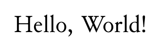
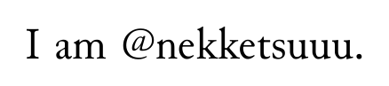

SATySFi による Hello World です。
コード例
@require: stdjabook
document (|
title = {Hello, World!};
author = {\@nekketsuuu};
show-toc = false;
show-title = true;
|) '<
+p {
Hello, World!
}
>
コード例の組版結果 (SATySFi version 0.0.3)

こちらは、もう少し凝った Hello World です。
コード例
@require: stdja
@require: standalone
let-inline \show-string s =
embed-string s
in
standalone '<
+p {
\show-string(`Hello, World!`);
}
>
コード例の組版結果 (SATySFi version 0.0.3)
